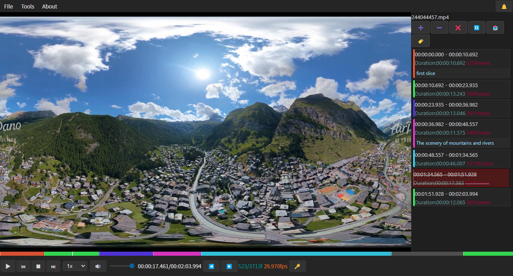

专为安防监控录像文件管理而设计的桌面应用程序，提供视频播放控制、分片编辑、文件管理、标签分类、缩略图生成等核心功能。特别适合管理小米摄像头等智能设备的录像文件。
支持标准播放、倍速播放（0.5x-4x）、逐帧查看、进度跳转，满足专业视频审查需求。支持拖拽文件直接打开。
精确到帧的视频分片功能，支持片段拆分、删除、恢复、标记。可分段导出或合并导出剪辑后的视频。
支持文件管理项目和剪辑编辑项目两种类型。项目自动保存工作状态，支持最近文件快速访问。
自动扫描入库、文件列表管理、多条件检索、回收站机制、批量操作，实现完整的文件管理流程。
灵活的标签分类系统，支持标签创建、编辑、删除，为文件和片段添加描述标签，按标签快速筛选。
自动生成视频缩略图，支持缩略图视图快速浏览视频内容，优化存储空间利用，提升浏览效率。

当前版本：5.2.0 | 发布日期：2026年5月